ERP · BUSINESS PROCESS · ODOO
CampusKart
End-to-end ERP consulting and implementation project involving business process analysis, BPMN modelling, process re-engineering and Odoo implementation across sales, inventory, procurement and accounting workflows.
PROJECT MATERIAL
Deliverables
Supporting documentation and project artefacts developed during the CampusKart ERP implementation.
Project Report
Detailed documentation of the CampusKart ERP project, including analysis, implementation and project work.
View Project Report →Project Presentation
Presentation documenting the project approach, implementation and key project outcomes.
Open Presentation →BPMN Models
Process models supporting business process analysis, re-engineering and ERP workflow design.
View BPMN Models →PROCESS DESIGN
Business process modelling.
BPMN modelling was used to represent and analyse the business workflows before translating them into ERP processes.


ERP IMPLEMENTATION
Project evidence.
Screenshots documenting the CampusKart implementation across website management, inventory, sales, purchasing, delivery and accounting workflows.
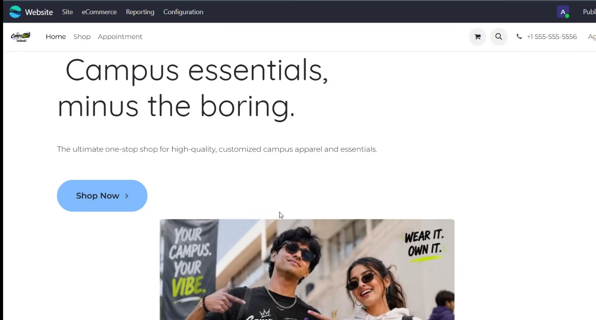
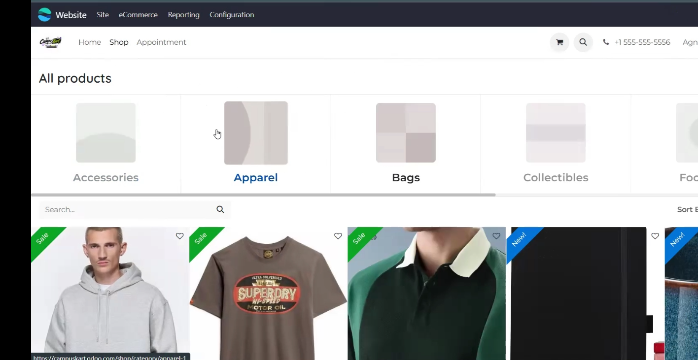
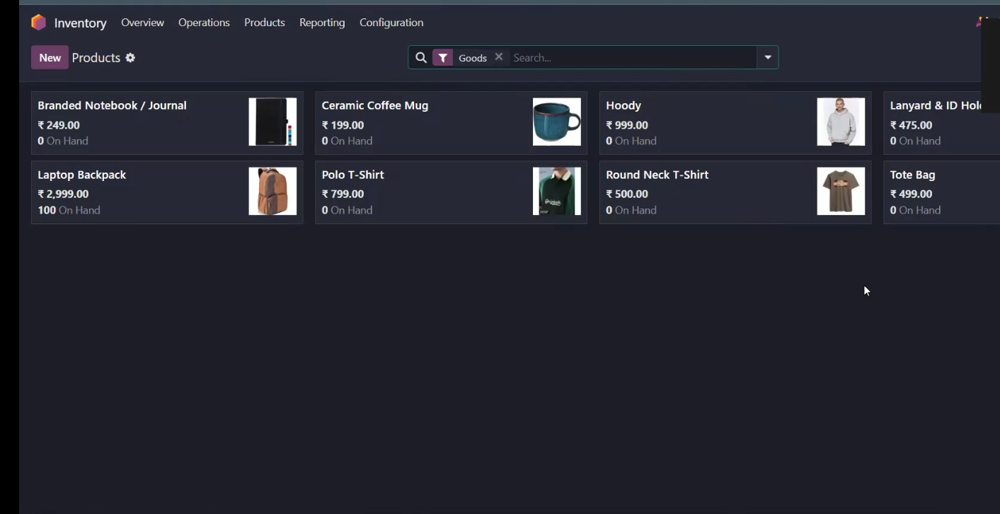
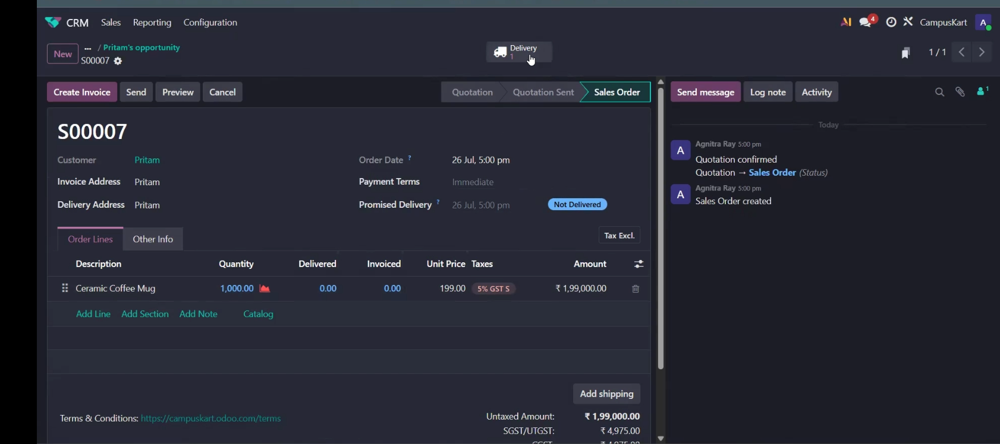
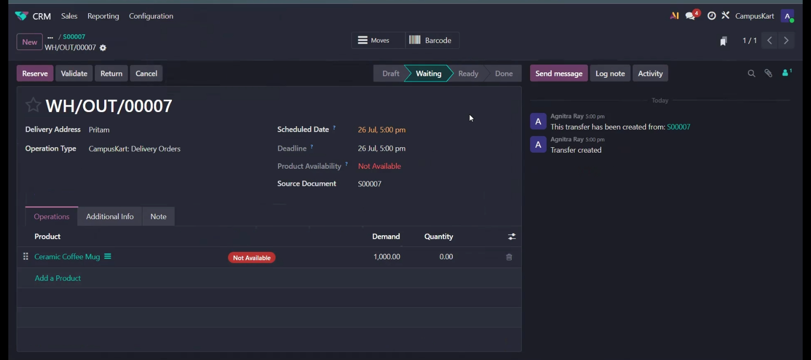
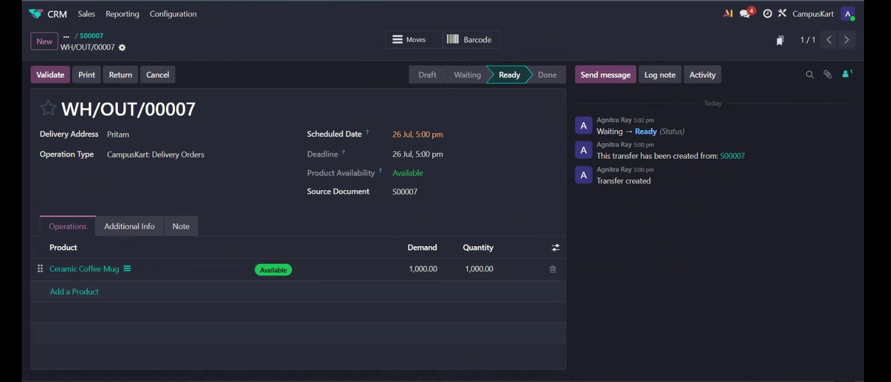
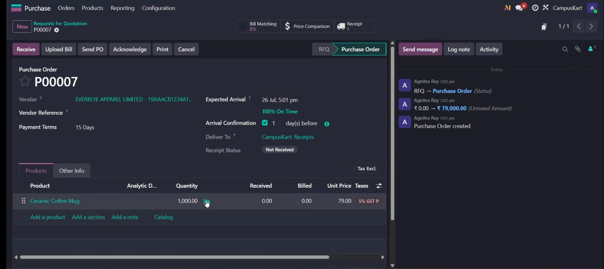
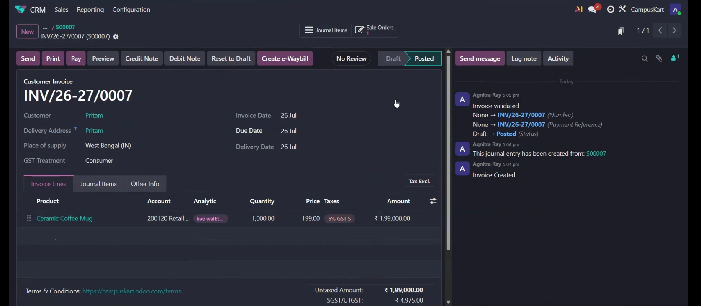
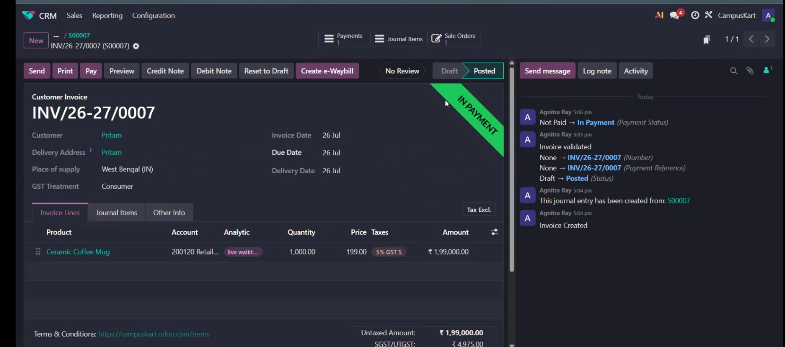
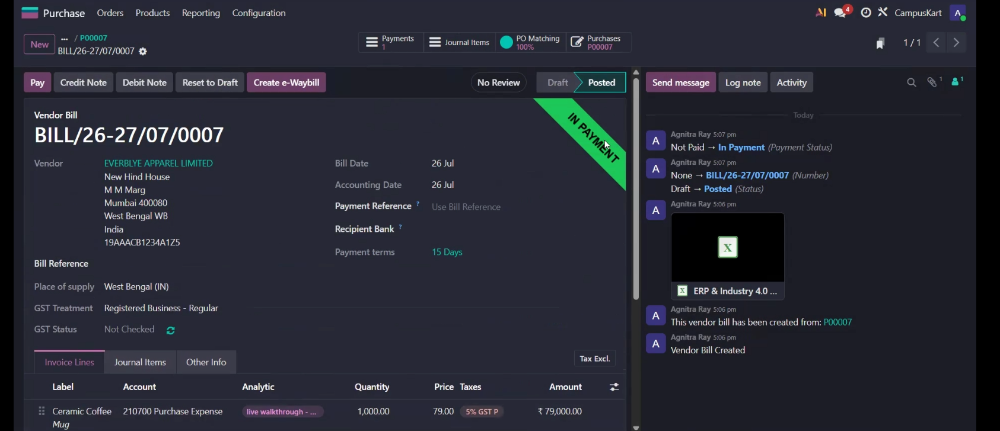
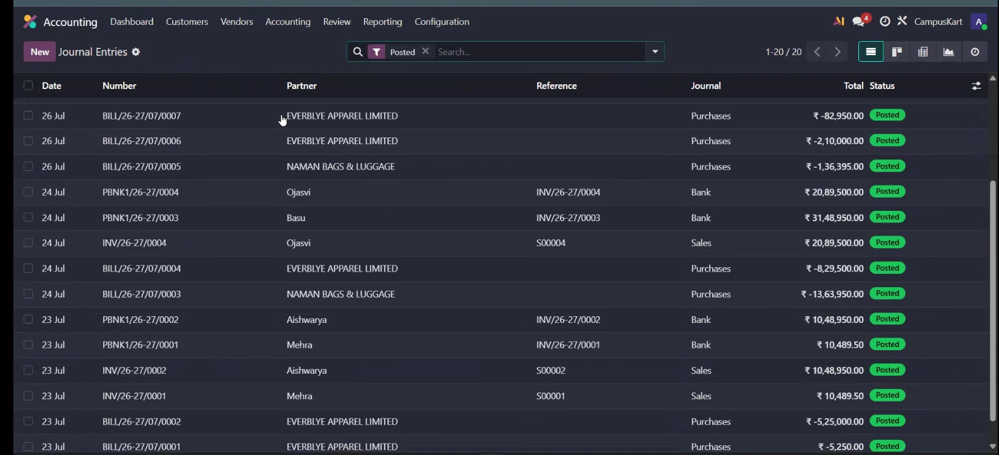
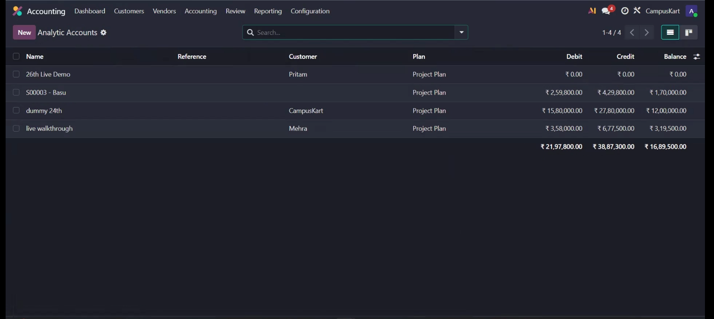
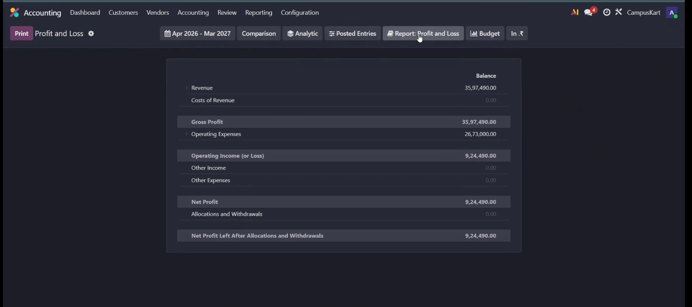
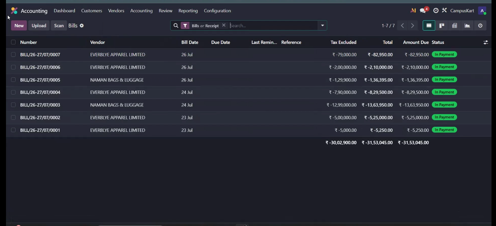